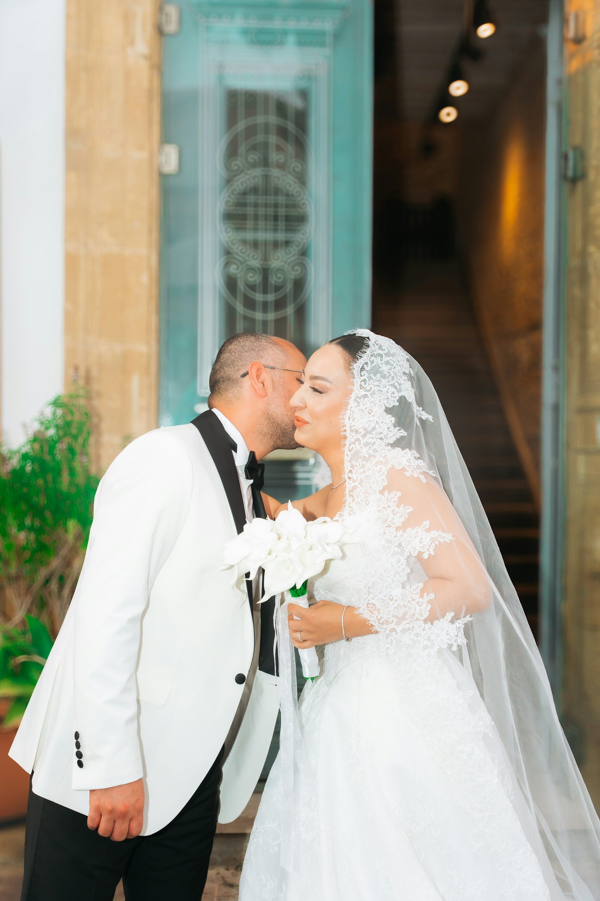
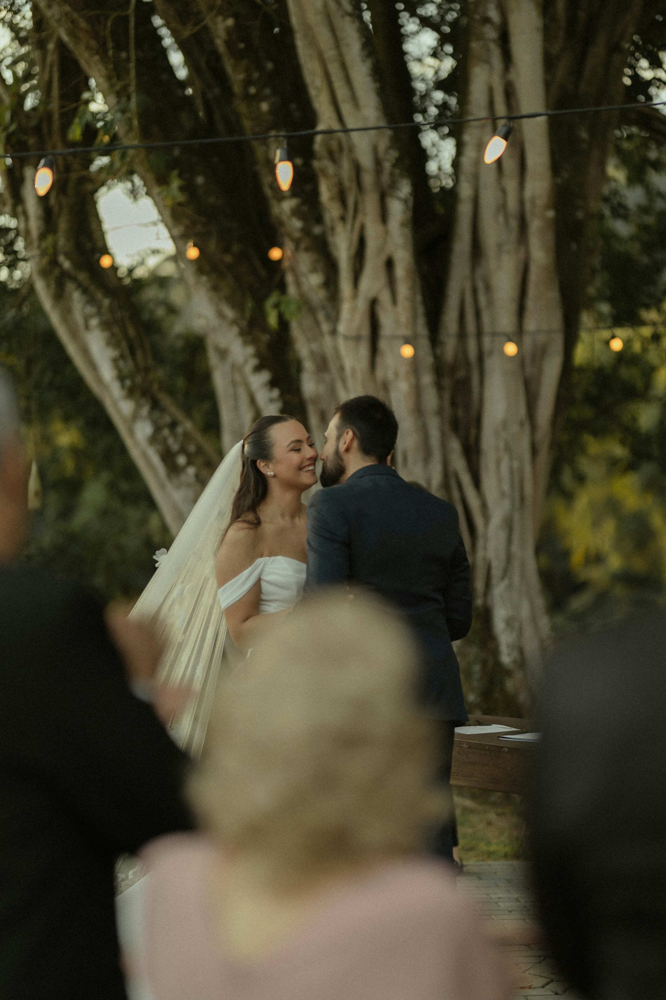

20 referências com intenção para cada momento da cerimônia. Filtrem, ouçam, favoritem e saiam com o roteiro pronto.
Cada história tem um som. A função aqui é ajudar vocês a acharem o seu, com contexto honesto e sem ranking de popularidade.

Escolha uma favorita para cada momento. O roteiro monta sozinho e sai pronto para o grupo, o celebrante e o cerimonial.
Não. São referências para decidir, não licenças. Verifiquem execução e Ecad com os responsáveis.
Comum em cerimônias religiosas. Levem o roteiro com 1 reserva por momento para aprovar de uma vez.
Sim, neste navegador. Para levar a outro aparelho, copie o roteiro ou envie no WhatsApp.
Deve. Cada card abre o vídeo original no YouTube. Decisão boa é decisão ouvida.